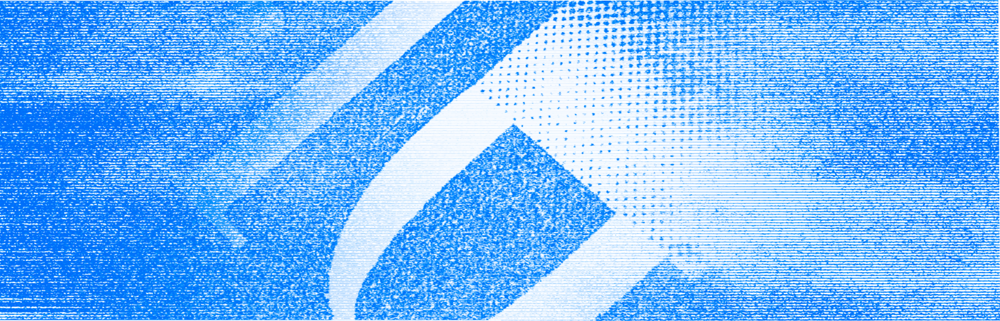
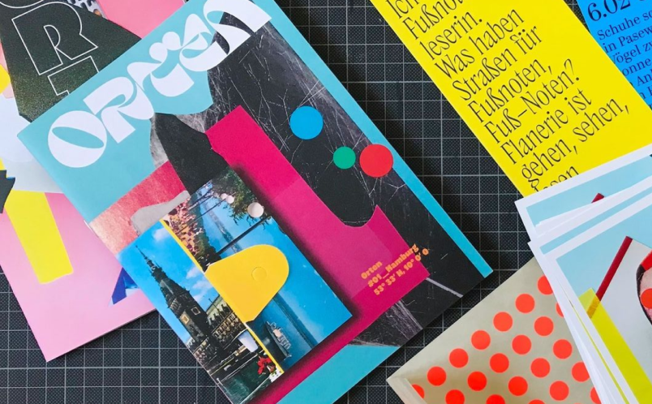
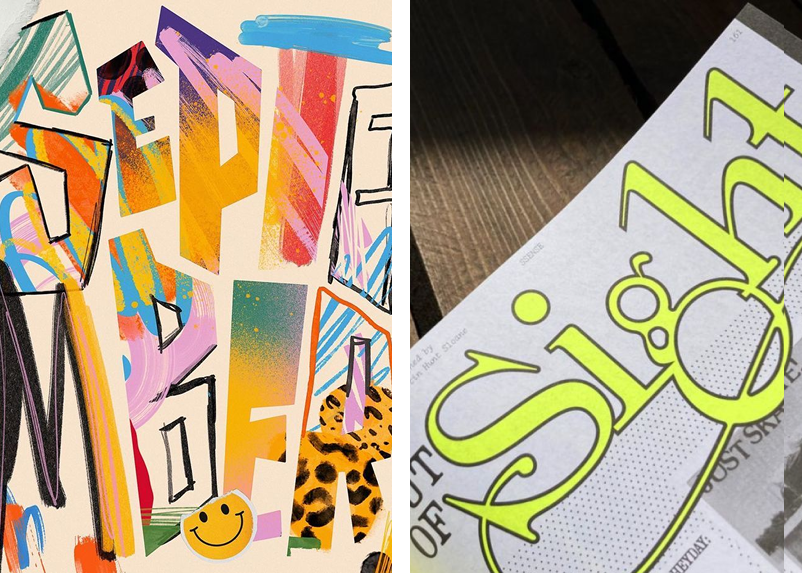
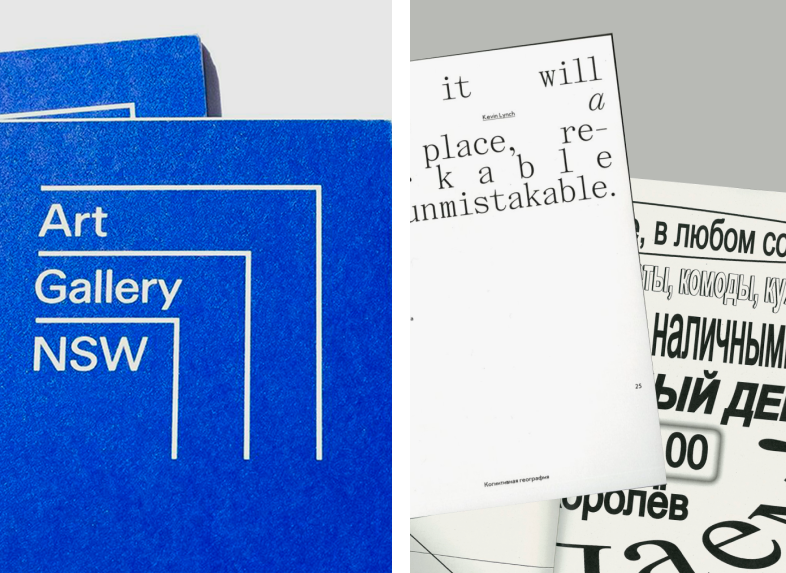

Учебник • Создание зинов для бренда • Создание личного бренда
Создание зинов для бренда
3.2 Типографика


2 минуты на изучение
Что такое типографика, как с ней работать, и в чём разница между леттерингом и шрифтом


Типографика и леттеринг
Зины и журналы
Типографика — это искусство работы с текстом. Она включает как готовые шрифты, так и леттеринг — вручную нарисованные буквы, которые придают уникальности каждому слову и передают настроение зина. Выбор между ними зависит от общего стиля зина: шрифты добавляют чистоту и структурность, тогда как леттеринг подчеркивает индивидуальность и эксперимент.
Леттеринг
Леттеринг — это больше, чем текст, это визуальный элемент, который сам по себе может передавать атмосферу вашего зина. Леттеринг позволяет создавать уникальные буквы и слова, чтобы подчеркнуть важные фразы или добавить рукотворности. Такие надписи подходят для заголовков или выделения цитат, особенно если они передают вашу творческую идентичность и усиливают визуальный стиль зина. Чаще всего леттерингу удаётся лучше передавать эмоции, чем стандартным шрифтам.
 
Шрифты
Работа с готовыми шрифтами даёт широкий спектр возможностей. Важно подобрать те шрифты, которые подходят к общему настроению и теме зина. Не останавливайтесь на обычном наборе текста, ведь у шрифтов можно менять их базовые настройки: увеличивать и уменьшать расстояние между буквами и строками и даже сжимать и растягивать текст, если это нужно для раскрытия вашего стиля. Но помните, что любые шрифтовые эксперименты должны поддерживать общую идею зина и не мешать удобству чтения.